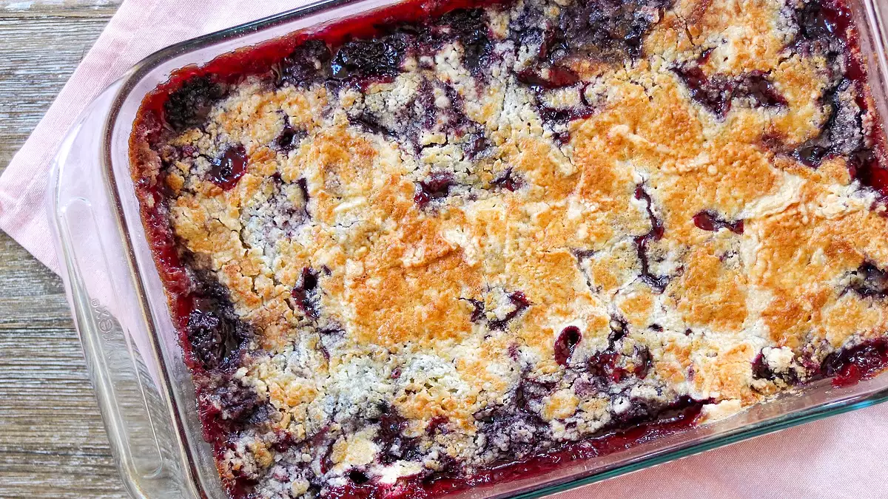

Delicious Blackberry Dump Cake Recipe

Description
This recipe requires about 10 minutes of prep time, and 45 minutes of baking time bringing the total time estimate for this recipe to about 55 minutes.
If followed correctly this recipe will yield 12 servings of delicious Blackberry Dump Cake! So without further ado let's get started!
Ingredients you will need for this recipe:
- 4 1/2 cups fresh blackberries
- 1 1/2 cups white sugar
- 1 cup unsalted butter, thinly sliced
- 1 (15.25 ounce) package French vanilla cake mix
Steps for baking:
- Preheat the oven to 350 degrees F.
- Mix blackberries and sugar together in a bowl. Transfer to a 9x13-inch glass baking pan and spread evenly over the bottom.
- Sprinkle cake mix evenly over the berries. Place butter slices evenly over the cake mix; most of the cake mix should be covered with butter slices. Do not mix or stir.
- Bake in the preheated oven until topping is golden brown, about 45 minutes. Serve warm